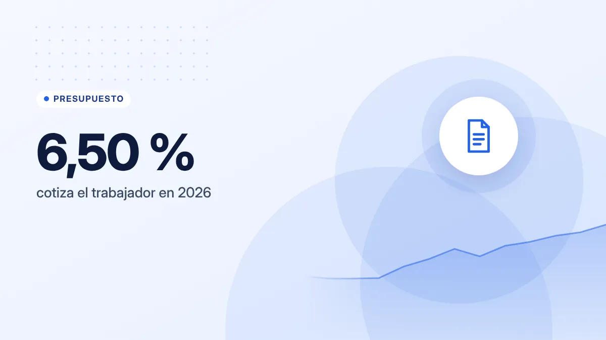
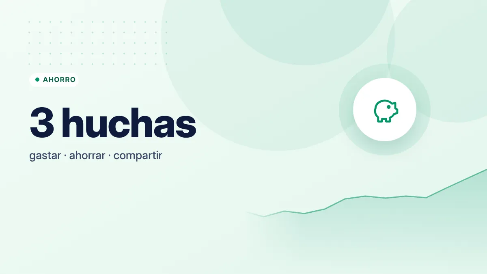

Ahorro
Fondo de emergencia: cuánto necesitas y dónde guardarlo
Cómo calcular el tamaño de tu fondo de emergencia, dónde guardarlo para que esté seguro y disponible, y cómo construirlo desde cero.
Finanzas personales para todas las edades
Guías gratuitas y sin tecnicismos para ahorrar, pagar menos y tomar mejores decisiones, tengas 18 años u 80.
Elige tu situación y te llevamos a las guías que más te ayudan.
Entiende tu nómina, haz tu primera Renta y empieza a ahorrar aunque cobres poco.
Ideas para gastar menos en la compra, el cole y las fiestas, y enseñar a los peques a ahorrar.
Cómo organizar el dinero en pareja y decidir entre alquilar o comprar con calma.
Protege tus ahorros de estafas y de la inflación, y elige dónde guardarlos.
Lo primero para poner orden en tus finanzas.
Cómo calcular el tamaño de tu fondo de emergencia, dónde guardarlo para que esté seguro y disponible, y cómo construirlo desde cero.
Seis áreas para entender y organizar tu dinero.
Organiza tu sueldo, entiende tu nómina y controla en qué se va cada euro.
Cuentas, tarjetas, hipotecas, TIN, TAE y cómo evitar estafas.
Conceptos básicos para entender la inversión a largo plazo.
Haz números en segundos. Los cálculos se hacen en tu navegador: no guardamos ningún dato.
Los términos que más aparecen en bancos, nóminas e hipotecas, en una frase.
Publicadas y actualizadas recientemente.
Los pequeños gastos diarios que pasan desapercibidos pueden sumar cientos de euros al año. Aprende a detectarlos y reducirlos sin renunciar a todo.
Guía para hacer tu primera declaración de la Renta en España: si estás obligado, cómo identificarte, revisar el borrador y presentar sin errores.
Qué es el interés compuesto, en qué se diferencia del simple, ejemplos con cifras reales, la regla del 72 y cómo juega también en contra con las deudas.
Guía para entender tu factura de la luz en España y reducirla: ajustar la potencia contratada, aprovechar los tramos horarios y elegir entre PVPC y mercado libre.
Explicación sencilla del Euríbor, cómo se calcula la cuota de una hipoteca variable, cada cuánto se revisa y qué opciones tienes si sube.
Modelos para organizar el dinero en pareja (todo junto, todo separado, cuenta común proporcional), cómo hablar de dinero y qué decidir juntos.
Diferencias entre tarjeta de débito y de crédito, modalidades de pago (fin de mes, aplazado, revolving), comisiones y cuándo usar cada una.
Estrategias prácticas para empezar a ahorrar con un sueldo ajustado: microahorro, gastos fijos, ayudas disponibles y cómo aumentar ingresos.
Explicación sencilla de TIN y TAE con ejemplos: por qué la TAE es la mejor forma de comparar préstamos, cuentas y depósitos.
Primero apunta tus gastos de un mes y después reserva una cantidad pequeña cada vez que cobres, aunque sean 20 €. Te lo explicamos en cómo hacer un presupuesto mensual y en el reto de las 52 semanas.
La recomendación habitual es reunir entre 3 y 6 meses de gastos esenciales. Puedes calcular tu cifra con la calculadora de fondo de emergencia.
No. Explicamos cómo funcionan los productos y en qué fijarse para comparar, pero no recomendamos entidades ni inversiones concretas. Lo detallamos en nuestra política editorial.
No. Todas las guías, las calculadoras y el asistente son gratuitos y no piden registro. La web se financia con publicidad, siempre señalada.
No. Nuestras guías son informativas y generales. Si tu caso es complejo (herencias, inversiones grandes, problemas con Hacienda), consulta con un profesional.
 AhorroEl reto de las 52 semanas: cómo ahorrar 1.378 € en un año sin darte cuenta
AhorroEl reto de las 52 semanas: cómo ahorrar 1.378 € en un año sin darte cuenta Gastos15 formas de ahorrar en el supermercado sin comer peor
Gastos15 formas de ahorrar en el supermercado sin comer peor BancosCuenta remunerada o depósito a plazo fijo: diferencias y cuándo elegir cada uno
BancosCuenta remunerada o depósito a plazo fijo: diferencias y cuándo elegir cada uno InversiónFondos indexados para principiantes: qué son, ventajas y riesgos
InversiónFondos indexados para principiantes: qué son, ventajas y riesgos PresupuestoEl método de los sobres: controlar el gasto con efectivo (o sin él)
PresupuestoEl método de los sobres: controlar el gasto con efectivo (o sin él) InversiónQué es la inflación y cómo afecta a tus ahorros
InversiónQué es la inflación y cómo afecta a tus ahorros
PresupuestoCómo leer tu nómina: del sueldo bruto al neto, línea a línea AhorroLa regla de las 72 horas y otros trucos para frenar las compras impulsivas
AhorroLa regla de las 72 horas y otros trucos para frenar las compras impulsivas AhorroCómo ahorrar en Navidad sin renunciar a disfrutarla
AhorroCómo ahorrar en Navidad sin renunciar a disfrutarla GastosSuscripciones olvidadas: cómo encontrarlas y cancelarlas en una tarde
GastosSuscripciones olvidadas: cómo encontrarlas y cancelarlas en una tarde Ahorro¿Alquilar o comprar vivienda? Las preguntas que debes hacerte antes de decidir
Ahorro¿Alquilar o comprar vivienda? Las preguntas que debes hacerte antes de decidir GastosVuelta al cole: cómo ahorrar en libros, material y uniformes
GastosVuelta al cole: cómo ahorrar en libros, material y uniformes GastosCómo pagar menos por tus seguros de coche y hogar sin quedarte desprotegido
GastosCómo pagar menos por tus seguros de coche y hogar sin quedarte desprotegido
AhorroCómo enseñar a los niños a manejar el dinero (y si darles paga) GastosCómo pagar menos por el móvil y la fibra sin perder calidad
GastosCómo pagar menos por el móvil y la fibra sin perder calidad GastosCuánto cuesta de verdad tener coche y cómo gastar menos en él
GastosCuánto cuesta de verdad tener coche y cómo gastar menos en élLo que puedes esperar de cada guía.
Cada guía enlaza a Banco de España, Agencia Tributaria, Seguridad Social, INE, CNMV o CNMC.
Actualizamos cifras y normas cuando cambian, e indicamos la fecha de la última revisión.
No recomendamos productos concretos. La publicidad está señalada y no influye en el contenido.